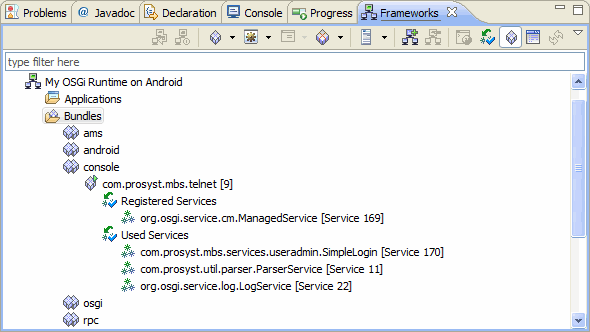
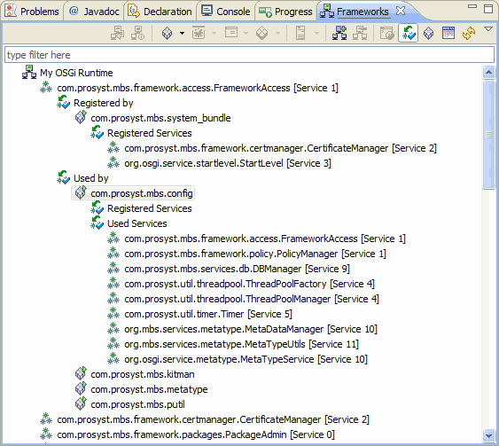

The Frameworks view provides the means for administration of remote OSGi frameworks. It supports connecting to OSGi frameworks as well as deployment and management of bundles, and applications on them. For each successfully connected framework, the Frameworks view provides a tree with the bundles, deployment packages, services, widgets and applications available on an OSGi framework as nodes.
Note: As by default the Frameworks view is not open, to make it appear in Eclipse use the Windows > Show View > Other menu command and in the Show View dialog select Frameworks under the mToolkit category.
The Frameworks view adds a view toolbar as well as offers convenient commands in the popup menu and in the view's pulldown menu.
The view has two display modes - Bundles (default) and Services. As concluded from the modes' names, the main display units in the Bundles mode are the bundles installed on the connected OSGi frameworks with the services they are registering and using as sub-nodes, while in the Services mode the tree is arranged by the registered services on the connected OSGi frameworks with the bundles registering and using them as sub-nodes.
To switch from the Bundles mode to the Services mode, click the  button from the view's toolbar. To return from the Services mode to the Bundles mode, click the
button from the view's toolbar. To return from the Services mode to the Bundles mode, click the  button.
button.

Figure 1: The Frameworks view of mToolkit - bundles display mode

Figure 2: The Frameworks view of mToolkit - services display mode

OSGi Management Overview
OSGi Frameworks Tree
Remote Console

Adding/Removing an OSGi Runtime
Configuring the Properties of an OSGi Runtime
Connecting to/Disconnecting from an OSGi Runtime
Managing Bundles
Managing Applications
Opening the Web Admin Console inside Eclipse
Using the Remote Console
Customizing OSGi Runtime Management
OSGi Management Troubleshooting

Frameworks View Tree Icons
Frameworks View Menus and Toolbar